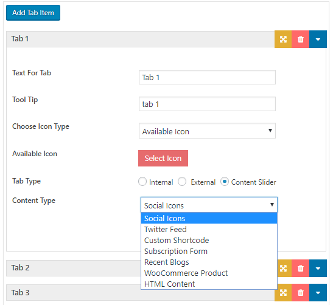
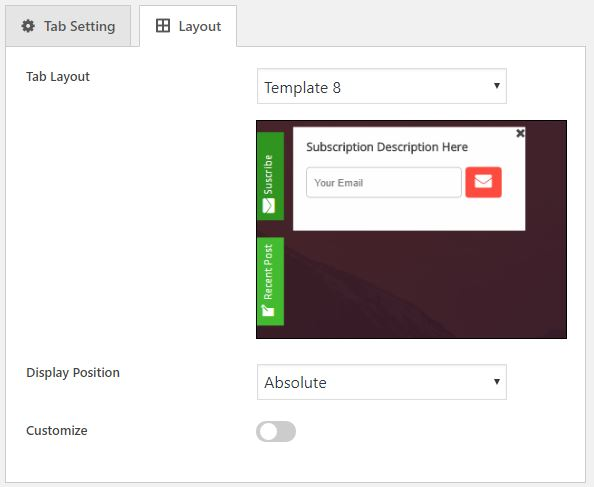
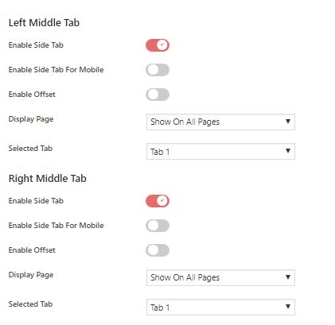
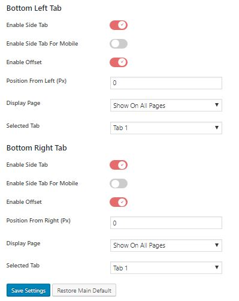
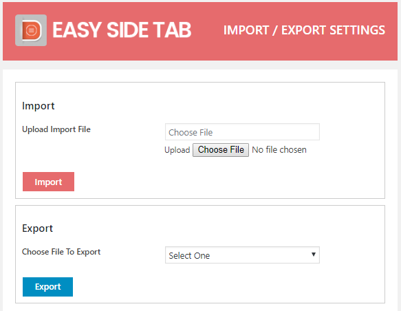

“Easy Side Tab Pro” Documentation by “AccessPress Themes” v1.0.0
“Easy Side Tab Pro”
Created: 15/06/2018
By: AccessPress Themes
Email: support@accesspressthemes.com
Thank you for purchasing our plugin. If you have any questions that are beyond the scope of this help file, please feel free to email via our user page contact form here. Thanks so much!
Table of Contents
- Installing Instructions
- ESTP Listing
- Add New Side Tab
- Tab Setting
- Layout Setting
- General Setting
- Twitter Setting
- Subscription Setting
- Import/Export
A) Installing Instructions - top
- Unzip easy-side-tab-pro.zip
- Upload all the files to the /wp-content/plugins/easy-side-tab-pro
- Activate the plugin through the 'Plugins' menu in WordPress.
Once the plugin is installed and activated you will find a menu named "Easy Side tab pro" in the left menu bar of the admin menu. Once you click on that menu, you will go to the plugin's tabs listing page. The plugin can be enabled and disabled from the menu 'Side Tab Setting'.
B) Easy Side Tab Listing - top

This is the landing page for plugin. Here you can see the listing of the all the Side tabs created. Here you can see Add Tab buttons at top left of Easy Side Tab listing table. You can also copy, edit, preview or delete side tabs created from here.
C) Add New Tab - top

In this section, you can quickly add any number of tabs.
D) Tab Settings - top

In this section you can change the settings of the tab such as:

- Tab Title
Here, you should assign the name for your tab.
- Tab Text
In this section you should input the name which is to be displayed on the tab.
- Choose Icon Type
Choose icon as Available Fonts (Font Awesome/Dashicons/Genericons) or Upload your own custom icon here.
- Tab Type
This field determines the type of tab that you are going to display on your website which are as:
- Internal
This field comes with a option to redirect to the internal page of your website.
- External
This field has a URL field where you should give the external link url (eg:https://www.google.com).
- Content Slider
Under this field there is a field where you write content so that content will be displayed on tab click.
- Internal
- Content Type
This options includes altogether 6 advanced components to fill on tab content which are mentioned below:
- Html Content :
Fill any html content here.
- Recent Blogs :
Display recent post or products as tab content.
- Twitter Feed :
Settings to show your tweets as tab content.
- Custom Shortcode :
Fill any external shortcode.
- Woocommerce Product :
Option to display your woocommerce products by type and category.
- Subscription Form :
Fill your subscription form details which will be displayed in the tab.
- Social Icons :
Add Social media icons which are connected to your profiles.
- Html Content :
E) Layout Setting - top

From this panel , you can configure the layout settings for side tab. Configurable side tab settings are listed as below.
- Template
This plugin comes with beautiful 10 different templates for giving new looks and styles.
- Display Position
You can set the side tab display position as absolute or fixed.
- Customize
Check this if you want to define custom colors for your tab.
F) General Setting - top
 
From this panel , you can configure the default settings for side tabs on 4 positions ie left middle, right middle, bottom left and bottom right. Configurable side tab settings are listed as below.
- Enable/Disable side tab
You need to enable side tab on required position here to display side tab in frontend.
- Enable/Disable Side Tabs For Mobile Device
You can define enable/disable Side Tab from mobile devices in this section. If you disable it, the side tab will not be shown in mobile devices.
- Enable Offset
Give offset to your tab from top(for left middle and right middle tabs), bottom left(for bottom left tab) and from bottom right(for bottom right tab)..
- Display Page
Option whether to display tab on homepage or all pages.
- Selected Tab
Select tab that you want to display for that specific position.
G) Twitter Feed Settings - top

This is the main setting page for your twitter account which is common for all of your tab settings. Here you are required to fill your twitter consumer key, consumer secret ,access token and access token secret for displaying twitter feeds on specific tab content as per setup.
Cache Setting
The plugin has inbuilt caching method to prevent the frequent API calls due to which site won’t get slow. So in this tab you can set up the cache period on how often the latest twitter feeds should be fetched from API.
- Cache Period - Enter the time period in minutes in which the feeds should be fetched.Default is 60 Minutes.
- Disable Cache - Check if you want to disable caching of tweets and want to fetch new tweets every time your site loads.
H) Subscribers - top

In this section you can view the lists of peoples who are subscribed to your channel with their email. There is also a option to export the subscribers information into the CSV formatted file.
I) Import / Export - top

This section is for the safety backup of your tab settings into your device storage. Here you can easily export the tab by selecting the required tab and clicking on export button. For Importing tab settings you just have to choose the file and click import button.
Once again, thank you so much for purchasing this plugin. As we said at the beginning, we'd be glad to help you if you have any questions relating to this plugin. No guarantees, but we'll do our best to assist. If you have a more general question relating to the plugin on CodeCanyon, you might consider visiting the forums and asking your question in the "Item Discussion" section.
AccessPress Themes